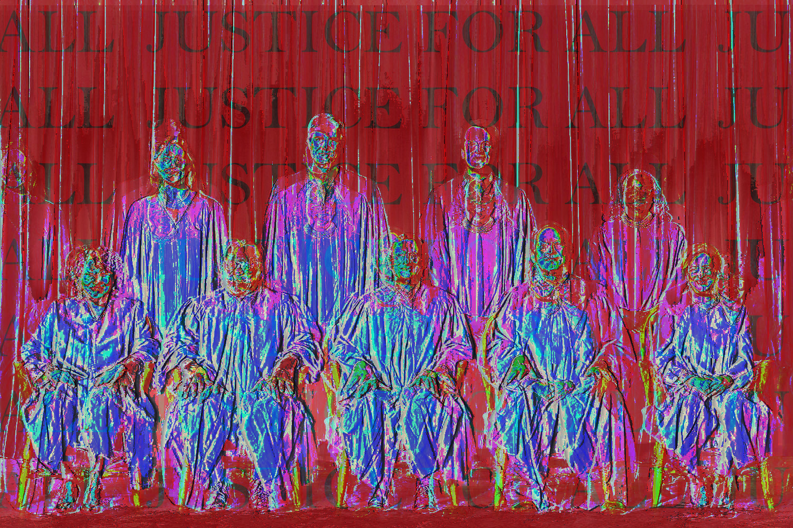
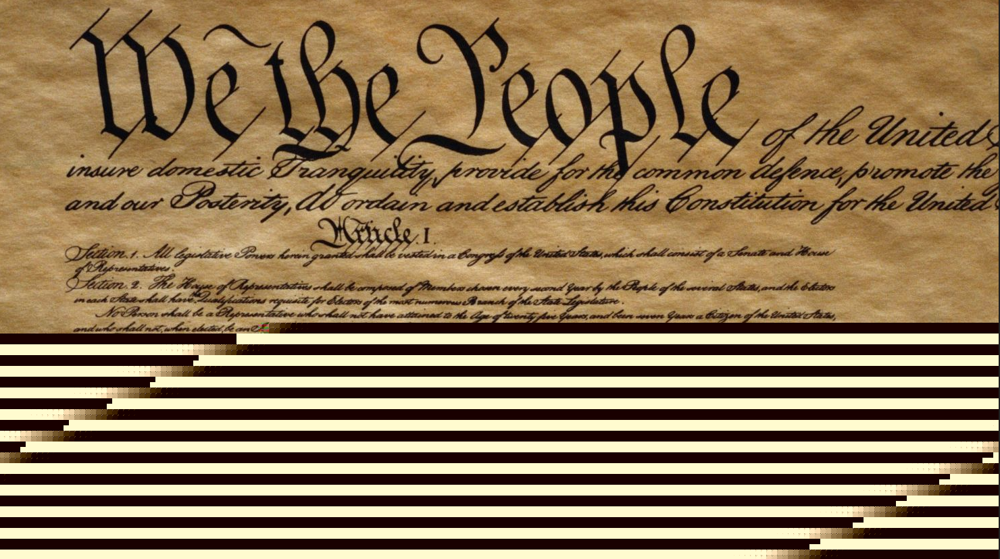

What happen when you purposely corrupt an image file? You create a glitch. Using a variety of methods such as editing the code in a note app to converting the jpg into a raw file then editing it in an audio mixer, I created this series. I choose to create political commentary using the methods listed above.

